Lumora
Scan your mouth on your phone, understand what changed, book the right dentist. On the other side, a practice that runs the dentistry, not the desk. One platform, two audiences, light and dark.
- Role
- Product designer, end to end
- Client
- UK-based client, via Hire My Idea
- Timeline
- Eight weeks, Oct–Nov 2026
- Surfaces
- Patient web app, dentist dashboard, two marketing sites, light and dark themes
- Status
- Designed to handoff, dev-ready. Dropped before launch when the company wound down.
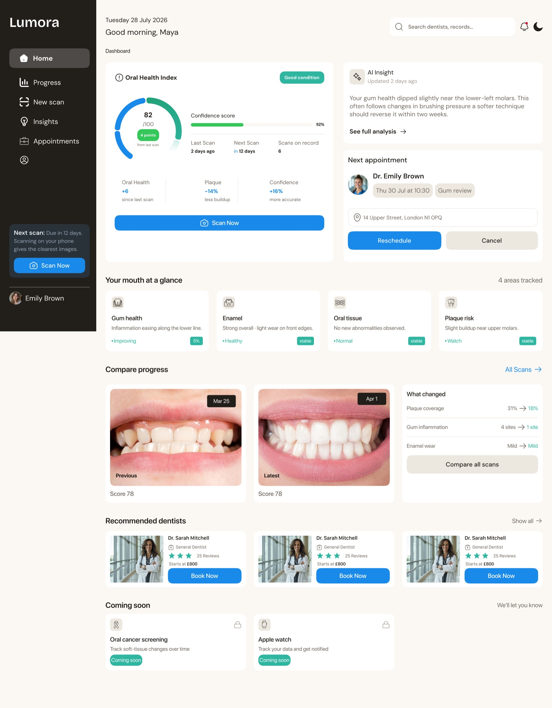
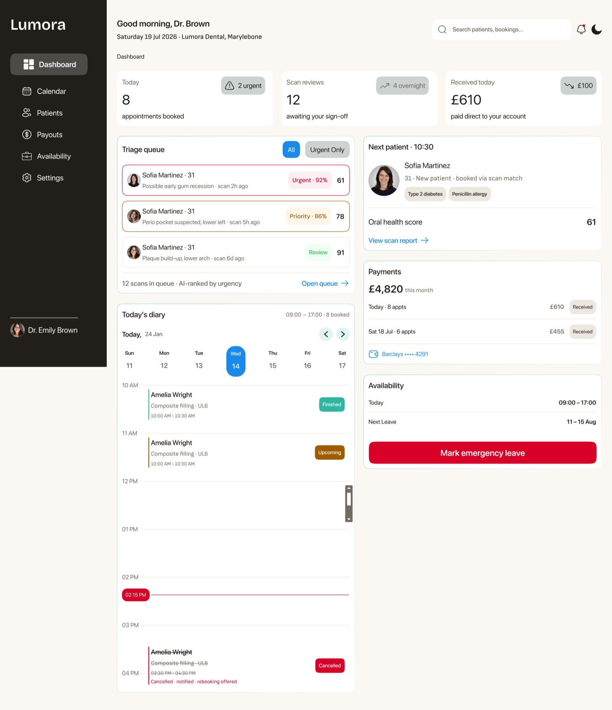
01The problem
Between dental visits, nothing is watching. Gum recession and plaque creep up in half-millimetres over months, and by the time a patient notices, it's a treatment rather than a habit change. Dentists, meanwhile, spend their mornings on the desk: chasing bookings, no-shows, refunds and invoices, then meeting a new patient cold.
Lumora's brief was an AI oral-health platform for the UK. Patients photograph their mouth on a phone, get an Oral Health Index with findings in plain language, track change over time, and book a specialist matched to what the scan found. Dentists get those scans ranked by urgency, a prepaid diary, instant payouts and automatic handling of cancellations. I designed both sides, their marketing sites, and both colour themes.
02What I designed
Patient side
- Home with Oral Health Index and confidence score
- Guided five-step scan with quality check
- Scan report, annotated photos, personalised findings
- Progress over time, compare any two scans
- Matched specialist booking with report attached
Dentist side
- Dashboard with AI-ranked triage queue and diary
- Scan report with findings, confidence and clinical notes
- Compare scans across a patient's history
- Payouts paid direct per booking, no settlement cycle
- Availability, planned leave, emergency leave
System
- Light and dark theme for every screen
- Shared components across patient and dentist apps
- Two marketing sites: for patients, for dentists
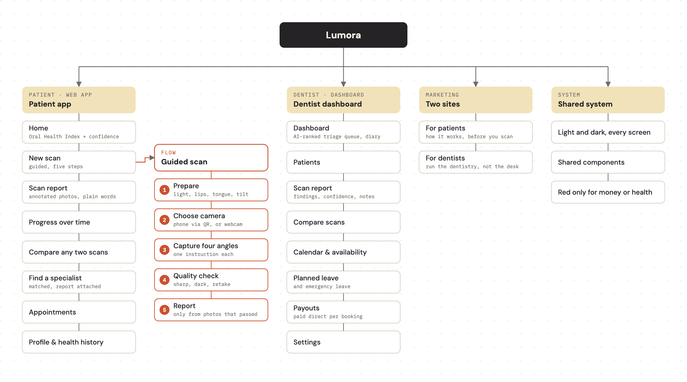
03Get the photo right before the model sees it
Every downstream finding depends on four photos taken by someone who isn't a photographer, in their bathroom. So the scan flow spends its effort on capture, not analysis. Five steps, each with one instruction and the reason behind it: find good lighting, wide relaxed smile, tongue out, tilt for upper, tilt for lower.
The app is honest about hardware. It tells you a phone camera focuses closer and lights the back teeth, offers a QR code or a text link to continue on your phone, and says plainly that webcams often can't focus close enough. After capture, a quality check grades each photo: sharp, or too dark, retake. The patient can still analyse anyway, but the system has told them what it will be working with.
Rejected: a single "take a selfie" step with the model compensating. It would have produced confident findings from bad inputs, which is the one failure a health product can't afford.
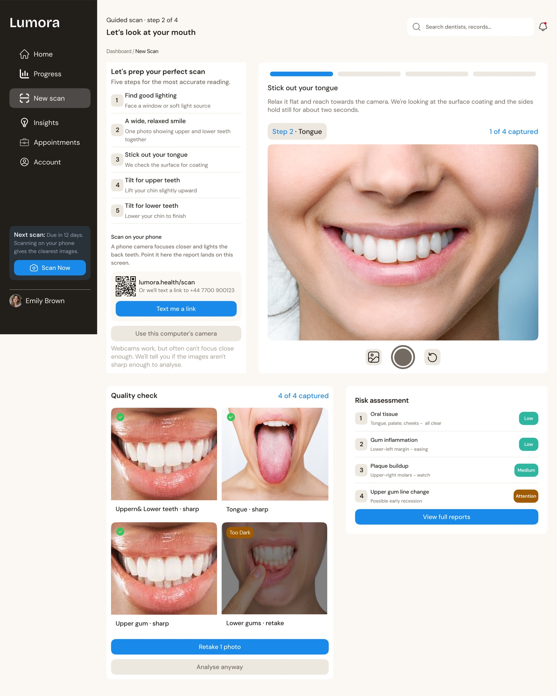
04Same finding, two languages
The model flags a 0.6 mm gum recession on the lower left. The patient and the dentist need completely different things from that fact, so the same finding is written twice.
The patient sees: "The gum has pulled back very slightly, about 0.4 mm, since June. Not urgent, but worth a look at your visit on 14 Aug." A Monitor badge, not a red one. Then a block that explains why the score moved, factor by factor, and a section that reads the finding through their own health profile: what type 2 diabetes does to gum inflammation, how their recession compares to never-smokers their age. The aim is that they understand it, not that they panic.
The dentist sees the same scan with confidence percentages per region, a note that findings under 70% confidence are hidden, and the line "your review decides the outcome". The triage queue ranks scans by urgency but never acts on them. A private clinical note sits at the bottom, visible to colleagues and never to the patient, while the dentist's decision is recorded against the scan in plain language the patient can read.
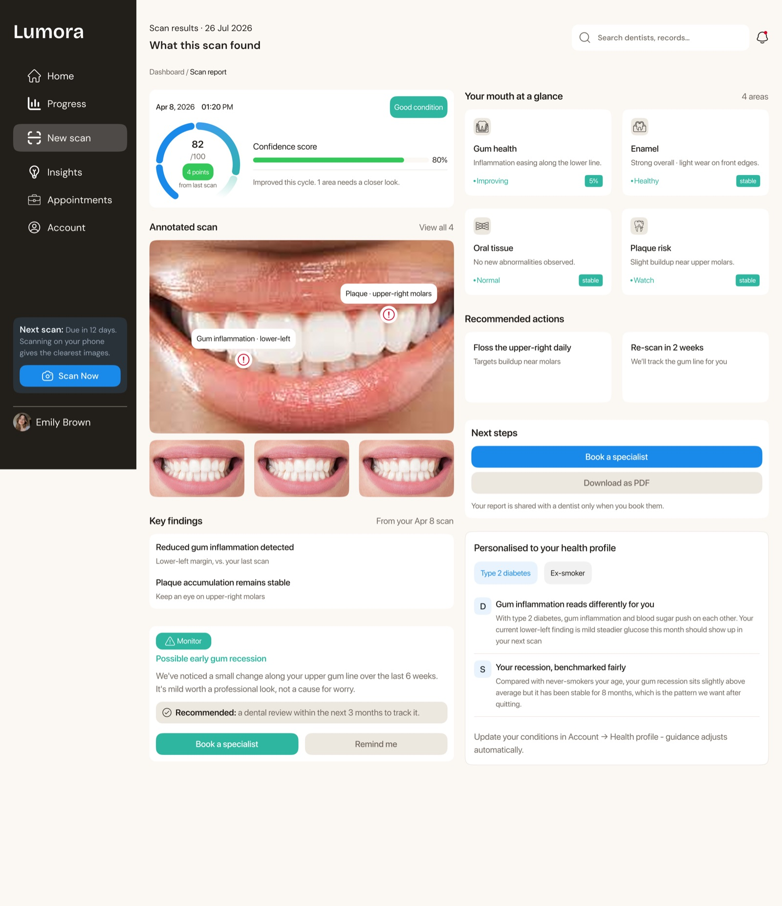
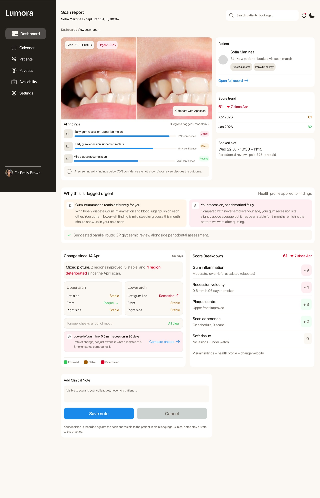
05The desk work disappears, including the bad day
Dentists don't leave platforms over features. They leave over admin. So the money and the calendar were designed to need nothing from them. Patients pay at booking, the fee lands in the practice's account the same moment minus a flat platform fee, and the Payouts page says "no settlement cycle" in its subtitle because that's the whole pitch.
The hardest case is the one nobody designs for: the dentist who wakes up ill with eight patients booked. Emergency leave is one button. Pick the scope (rest of today, today and tomorrow, or custom), pick a reason category, confirm. The right-hand panel shows exactly who's affected and what each refund costs before you commit. Then everything happens automatically: the diary closes, patients are notified and refunded in full, each gets priority rebooking into the next open slots. Patients see only "your dentist had an emergency" and the category, never the details, and the dentist's attendance rate isn't touched.
Why the red button is fine here: it's destructive to today's income and it should look like it. What it must not be is laborious. The consequences are shown, not hidden behind a confirmation dialog.
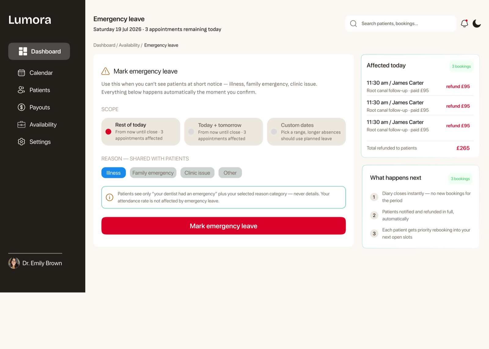
06Change over time is the product
A single scan is a snapshot. The value is in the second one. Both sides get a compare view: two scans side by side, the changed region outlined on the photo, and a short list of what moved, which direction, by how much. The patient version ends with "the story so far" in two sentences. The dentist version adds a scan-by-scan history strip and the score drivers, including the ones the patient contributes to, like smoking and glucose control.
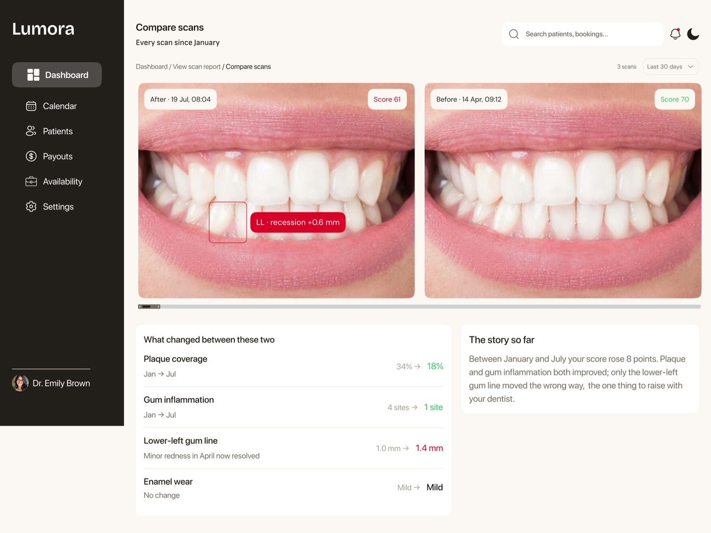
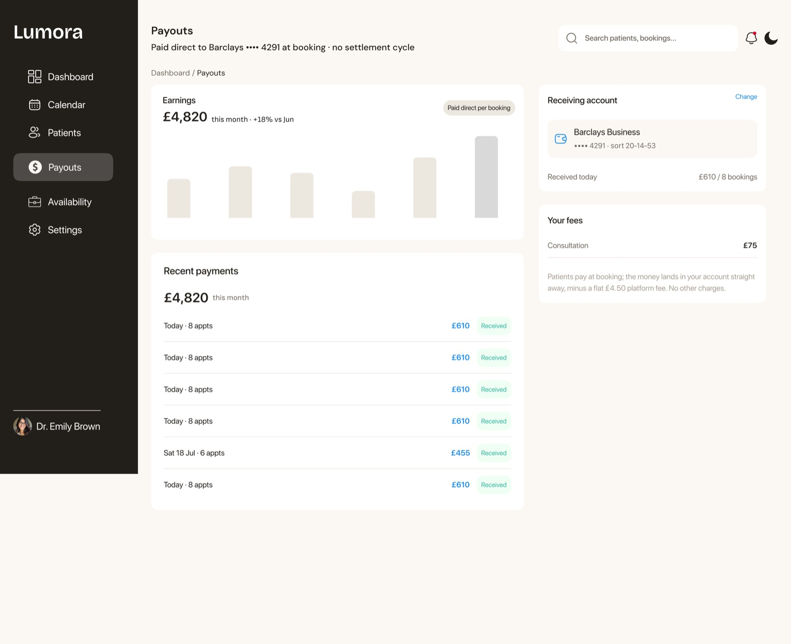
07Craft and system
- Two themes, every screen. Light and dark were designed in parallel, not retrofitted. Photographs of teeth and gums read differently against each background, so the status colours were tuned per theme.
- Colour means one thing. Green, amber and red mean improved, stable and needs attention everywhere, for both users. Red is reserved for findings and for emergency leave, so when it appears it's earned.
- Two sites, one voice. The patient site leads with "Smart oral wellness guided by expert care" and answers "is this a replacement for my dentist?" with a plain no. The dentist site leads with "Run the dentistry. Not the desk." and prices itself in one line: a flat monthly fee, no commission.
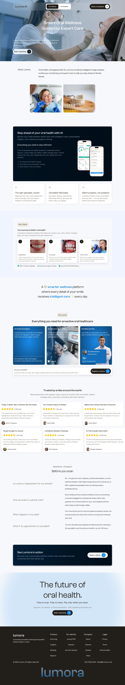
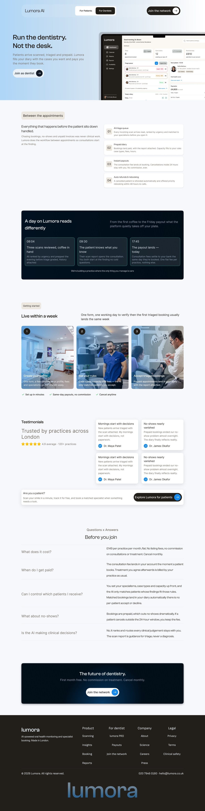
08Outcome
Both apps, both themes and both marketing sites reached dev-ready with annotated handoff. The project was dropped before launch when the company wound down.
What I'd have measured
- Scan quality pass rate. How many first attempts come back sharp. If it's low, the guidance isn't working.
- Second-scan rate. Whether patients come back. The product only pays off on the second scan.
- Dentist agreement with triage rank. How often the dentist's decision matches the urgency the model assigned. The number that tells you whether to trust the queue more or less.